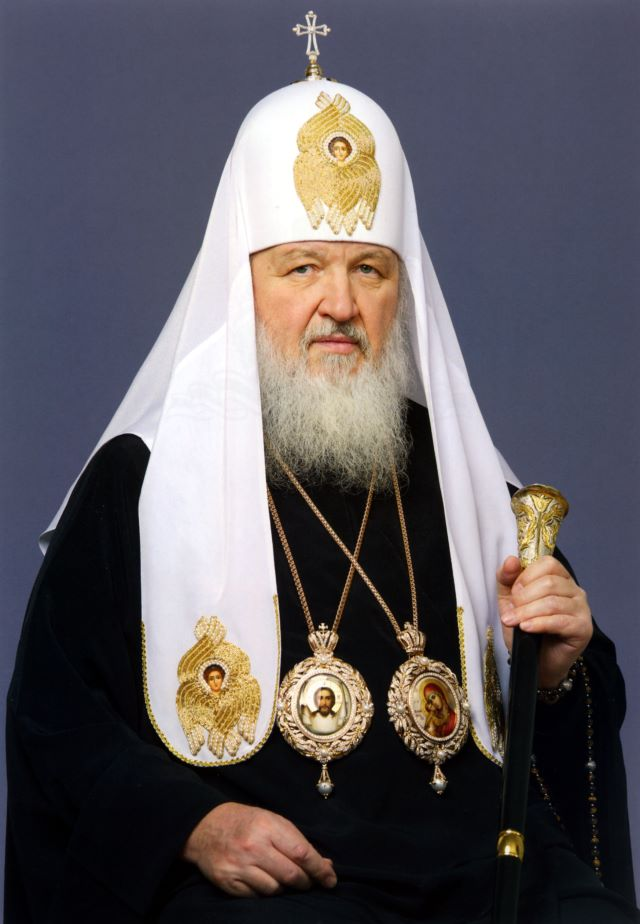

Крест на войне. Бог как орудие государственного нарратива.

Владимир Гундяев стал монахом в 1969 году, взяв имя Кирилл. За полвека прошёл путь от семинариста до Патриарха всея Руси. С 2009 года возглавляет РПЦ — институт с 100 миллионами верующих. После 24 февраля 2022 года превратил кафедру Христа в трибуну войны: благословлял солдат, называл гибель в Украине «мученичеством», а саму войну — «метафизической борьбой» против западных ценностей.
Родился в семье священника. Дед — священномученик, отец — священник. Семья пережила блокаду Ленинграда. Религиозное воспитание с детства.
Принимает постриг, рукоположен в диакона, затем в иерея. Стремительная церковная карьера под покровительством митрополита Никодима (Ротова).
Возглавляет Отдел внешних церковных связей — ключевой дипломатический орган РПЦ. Строит отношения с государством, формирует доктрину «Русского мира». Регулярный участник Давосского форума и переговоров на высшем уровне.Факт
После смерти Патриарха Алексия II избран Поместным собором. Активно продвигает концепцию «Русского мира» как особой православной цивилизации, охватывающей Россию, Украину и Беларусь.
После захвата Крыма не осудил аннексию. Концепция «Русского мира» используется как теологическое обоснование территориальных претензий. Украинская православная церковь оказывается под давлением.Интерпр.
Через три дня после начала полномасштабного вторжения служит литургию в Храме Христа Спасителя и заявляет, что «сегодня происходит борьба, которая имеет не физическое, а метафизическое значение». Не называет войну войной.Факт
В Прощёное воскресенье произносит проповедь, в которой связывает войну с отказом Украины проводить «гей-парады»: «восемь лет попыток уничтожить то, что существует на Донбассе». Слова облетают мировые СМИ.Факт
Великобритания вводит персональные санкции. Следом — Канада, Австралия, Швейцария. Попытка ЕС ввести санкции заблокирована Венгрией. Кирилл — единственный православный патриарх под западными санкциями в истории.Факт
После объявления мобилизации заявляет: «Человек, который умирает, исполняя свой воинский долг, совершает деяние, которое ставит его рядом с мучениками». Слова вызывают широкое осуждение.Факт
Кирилл использует уникальный инструмент — авторитет Церкви с её двухтысячелетней историей и сотнями миллионов верующих. Война переводится в категорию сакрального: не политическое решение, а Божья воля; не агрессия, а защита православной цивилизации. Эта риторика снимает с солдат моральную ответственность и делает сопротивление войне богоотступничеством. Интерпр.
Концепция «Русского мира» — теологическое обоснование имперских претензий: Украина, Беларусь и Россия образуют единое духовное пространство, которое не может быть разделено государственными границами. Это напрямую отрицает украинскую национальную и религиозную идентичность. Интерпр.
Ключевое отличие от других пропагандистов: Кирилл не требует от аудитории политической лояльности — он требует веры. Вера не проверяется фактами.
Великобритания — введены 21 июля 2022 года. Официальная формулировка: «Патриарх Кирилл публично поддерживает и оправдывает военные действия России против Украины. Регулярно произносит речи, легитимизирующие агрессию, используя религиозный авторитет.»
Канада — введены в 2022 году в рамках Special Economic Measures Act. Австралия — введены в 2022 году. Швейцария — введены в 2022 году в рамках антироссийского пакета.
Европейский союз — попытка включить Кирилла в 6-й санкционный пакет (май–июнь 2022) заблокирована Венгрией под давлением Виктора Орбана. Кирилл — единственный православный патриарх, против которого когда-либо вводились западные санкции.
Все утверждения основаны на открытых публичных источниках. Факт — прямые первичные источники. Интерпр. — авторская интерпретация.